~ ADOLESCENCIA ~
---------------------------------------------------------------------------------------------------------------------------------------------------------------------------------------------------------------------
Considero que adolescencia comenzó a los 12 años cuando entre a la secundaria. En esta etapa ha sido donde conocí a las mejores personas las que siempre
han estado para mi ante cualquier problema que siempre me apoyan y me dicen si las cosas están bien o mal, siempre quieren lo mejor para mí al igual que yo para
ellas, en tercero de secundaria conocí a 2 de ellas una llamada Belén y la otra Dayra, ya que una de ellas mi mejor amiga Azucena ya la conocía desde la primaria pero fue en
esta etapa que nos empezamos hablar más y surgió una gran amistad.

Cuando entre a la prepa mis amigas de la secundaria y yo quedamos en el mismo salón y a nuestro grupo se integraron dos más Karely y Heidy, siempre hemos estado juntas, hemos peleado, d
iscutido e incluso nos hemos dejado de hablar por algunas peleas pero siempre volvemos hablarnos y reconocemos nuestros errores. Ellas para mis son personas muy importantes y lo seguirán
siendo por siempre.
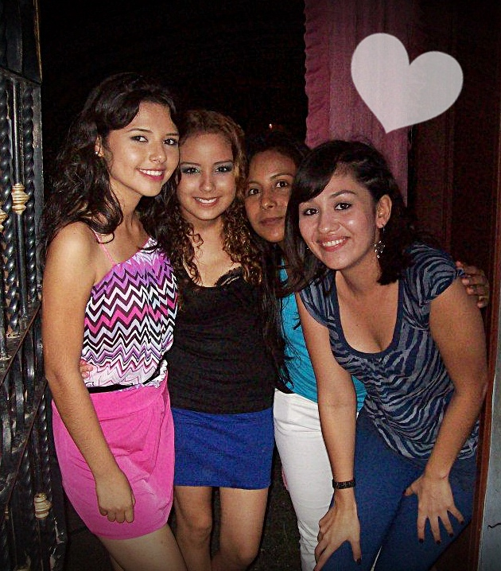
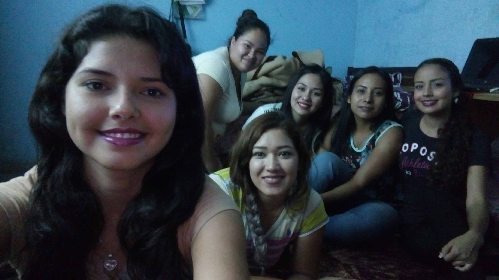
Cuando cumplí mis quince años me hicieron fiesta el 10 de diciembre de 2011 en un salón grande con muchos invitados. El salón se llama Bugambilias,
la misa fue en la Iglesia de Nuestro Señor del Perdón en Ruiz Cortines, mi fiesta tuvo 400 invitados más las personas que fueron que no tenía contempladas,
el salón se llenó, la fiesta estuvo muy bonita a pesar de unos accidentes que pasaron a la hora de estar bailando los claveles, esa es una historia muy graciosa
ya que pasaron a bailar unas personas que andaban un poco tomadas y ya bailando me pisaron el vestido y me tumbaron caí acostada en el piso, toda la gente que estaba
viendo se espantó mucho por lo que había pasado pero a mí solo me dio risa y me levante y seguí bailando, pero resulta que no fue una caída si no dos,
dos veces me tumbaron cada vez una persona diferente, pero no me amargo la noche yo seguí muy feliz celebrando mi fiesta, bailando y saltando. Todas las personas me
preguntaban que si no me había golpeado y yo les decía que no porque había caído arriba del vestido esponjado. A pesar de eso me encanto mi fiesta y
creo que a todas las personas que asistieron también porque felicitaron mucho a mi mamá que le había quedado muy bien la fiesta y que si donde había
contratado los chambelanes pero resulta que eran mis amigos, también le preguntaban que si a quien había contratado para ensayar el vals y le decía que
nosotros mismos lo habíamos hecho y no le creían porque le decían que había quedado muy bien. Mis amigos me hicieron un baile “sorpresa” lo pongo entre
comillas porque lo ensayaban en mi casa y me decían que el día de la fiesta tenía que hacer cara de que no sabía que lo habían planeado para mí.
 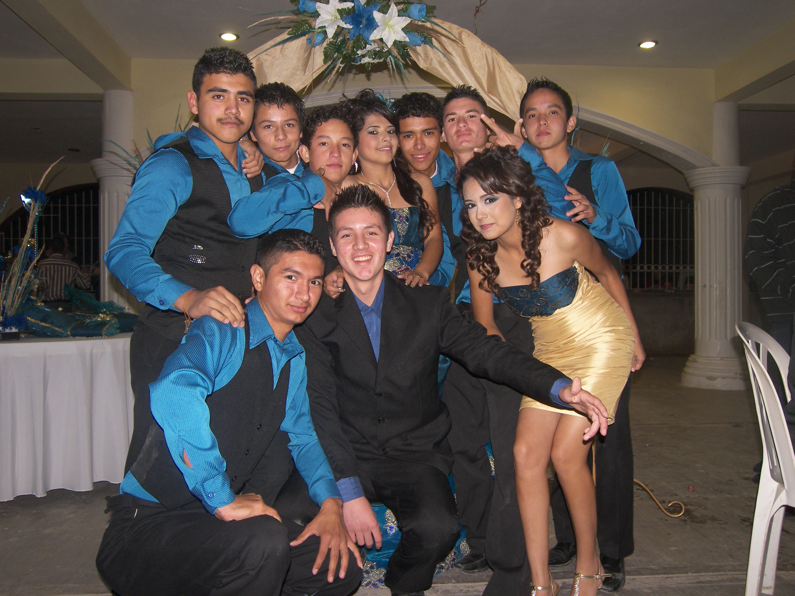
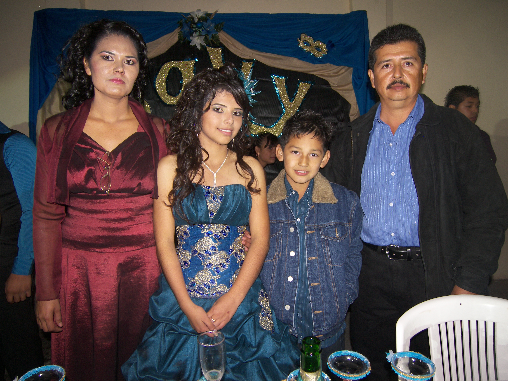
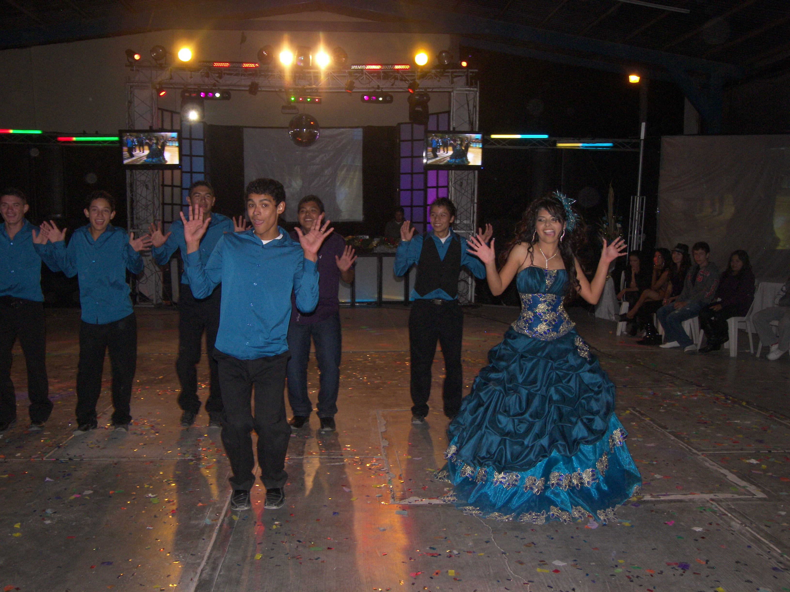
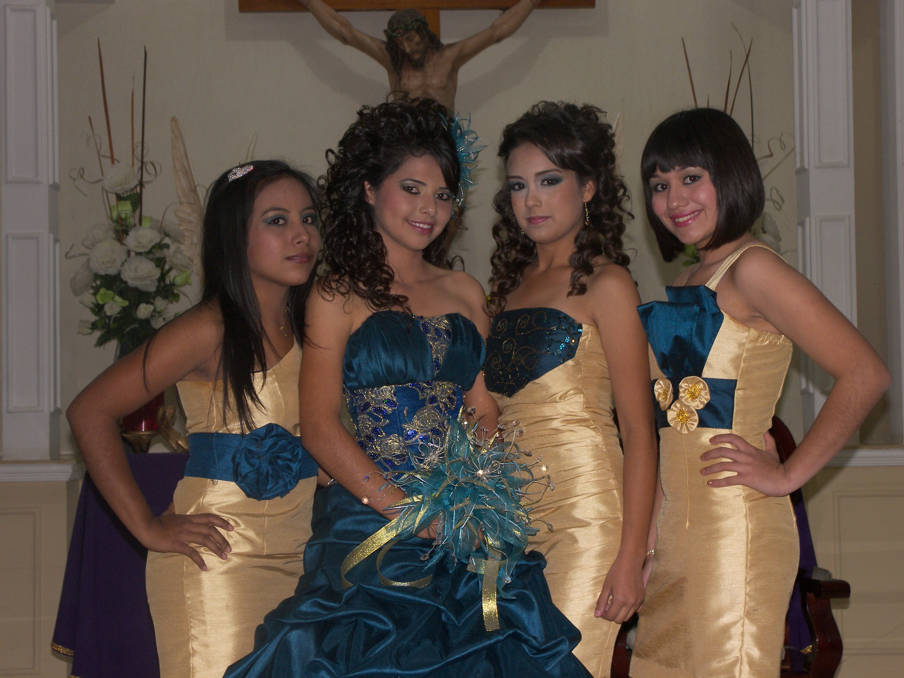
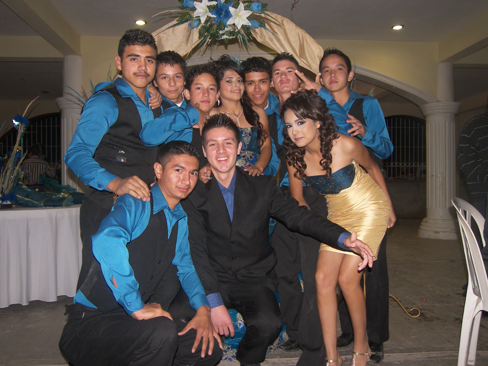
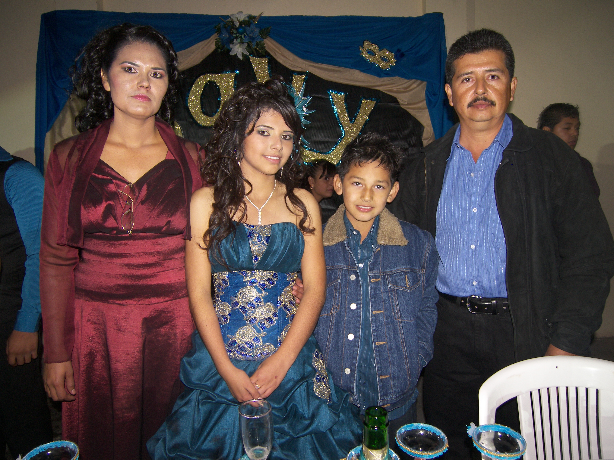
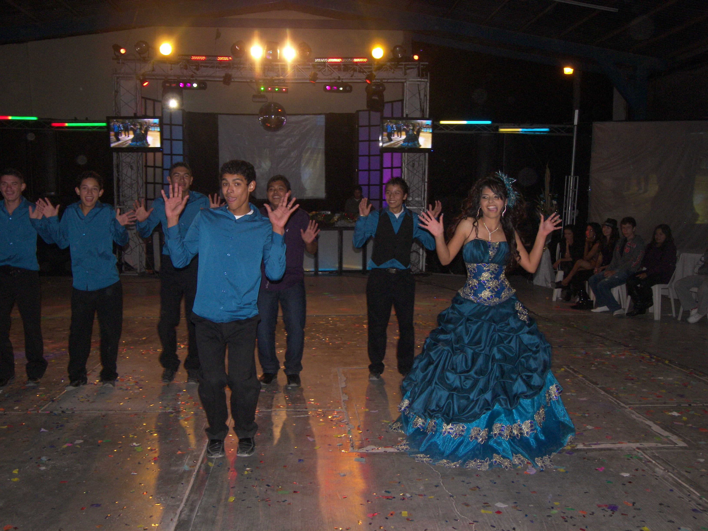
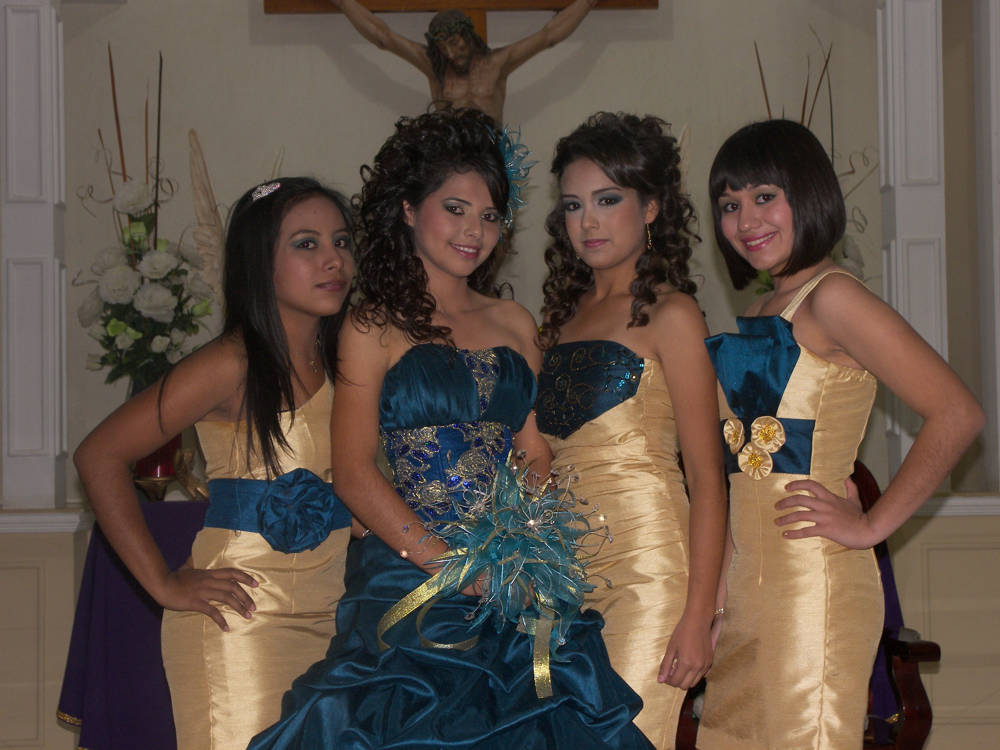
A los 16 años hice una viaje a Ensena, Baja California. Fui con mi abuela a visitar a mis tíos que viven allá conocí muchas personas y lugares,
uno de ellos la Bufadora ese lugar está muy bonito, llegan muchos turistas de diferentes partes del mundo, era la primera vez que yo viajaba sola sin mi familia,
primero me sentí triste porque ellos no habían podido acompañarme pero me dijeron que todo iba a estar bien que disfrutara mis vacaciones y eso hice.
Dure dos meses en Ensenada, primeramente llegue con un tío que vivía en donde había aguas termales y viñedos, me llevo a conocer las aguas termales
y nos bañamos, íbamos su familia y yo. Un fin de semana fuimos al malecón de Ensenada y a playa hermosa que está a un lado del malecón, caminamos
por toda la orilla del malecón y decidimos subirnos a un barco para ir a ver focas y darles de comer. El siguiente fin de semana fue cuando conocí la Bufadora,
el día que fuimos me toco que nos bañara la brisa del agua que sale. Después de pasar tres semanas en casa de mi tío fui a visitar a una tía a San Quintín
con ella dure también tres semanas, cuando estuve con ella fuimos a una playa y sacamos patas de mulas para hacer un ceviche, el agua estaba muy fría nunca me
imaginé que el agua estaría así, pasamos un día muy agradable todos, enterramos a mis primos en la arena y jugamos con una pelota, etc. Después
de haber pasado las tres semanas con mi tía regresemos a Ensenada y volvimos a ir a la Bufadora pero ahora con una tía y sus hijos a ellos yo no los conocía
y hoy en día somos muy apegados. Ese viaje fue de mucho agrado y experiencia.

GALERÍA ENSENADA
En mi cumpleaños número 17 me hicieron una cena con mis amigos, recuerdo que todos estábamos en un porche chiquito hechos bolas para no mojarnos porque como
de costumbre llovió ese día de mi cumpleaños, también recuerdo que cuando le estaba mordiendo al pastel me empujaron y termine con la cara llena de betún.
En mi cumpleaños número 18 no tuve fiesta pero si me compraron un pastel, recuerdo que no me hicieron nad aporque iba a la universidad en la tarde y salía a las
ocho de la noche y aquí a mi casa llegaba casi a las nueve de la noche.

 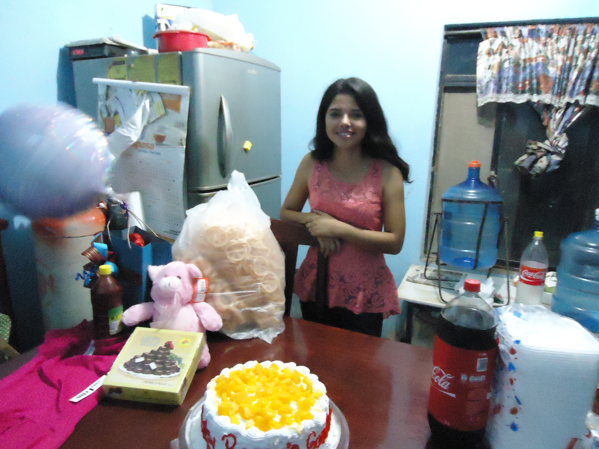
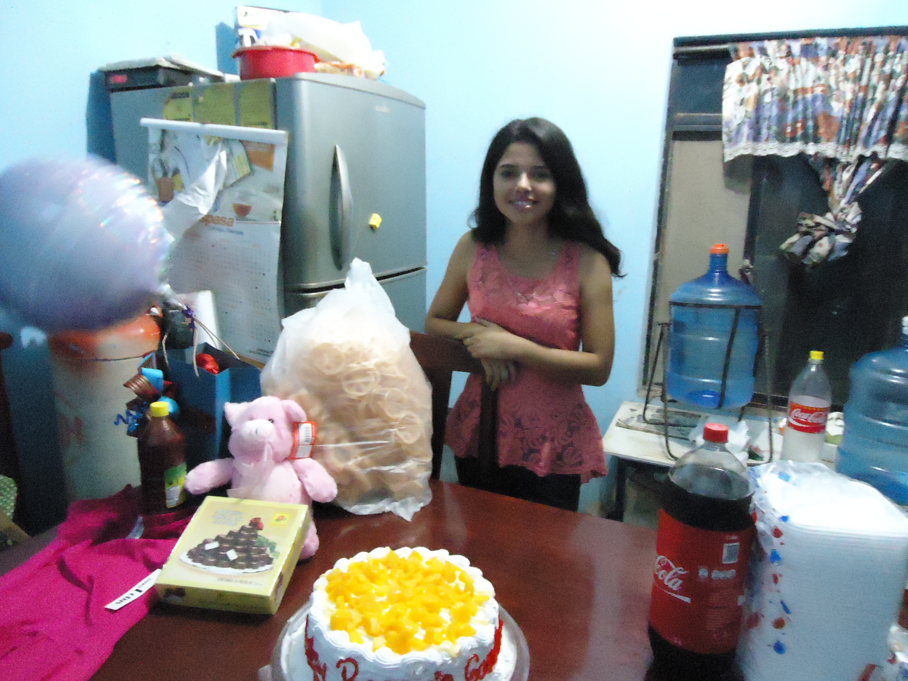
En mi cumpleaños 19 solamente me acompaño mi familia, mi mejor amiga Azucena y mi novio Jose.


A esa misma edad por primera vez fui a un carnaval en semana santa, fui a Casas Blancas con la familia de mi novio, bailamos mucho, reímos y sobre
todo nos divertimos, también en semana santa fuimos a la playa Las Gloria que se encuentra en Guasave. Y también fuimos al rio de Sinaloa de Leyva y
cruzamos el puente colgante.
 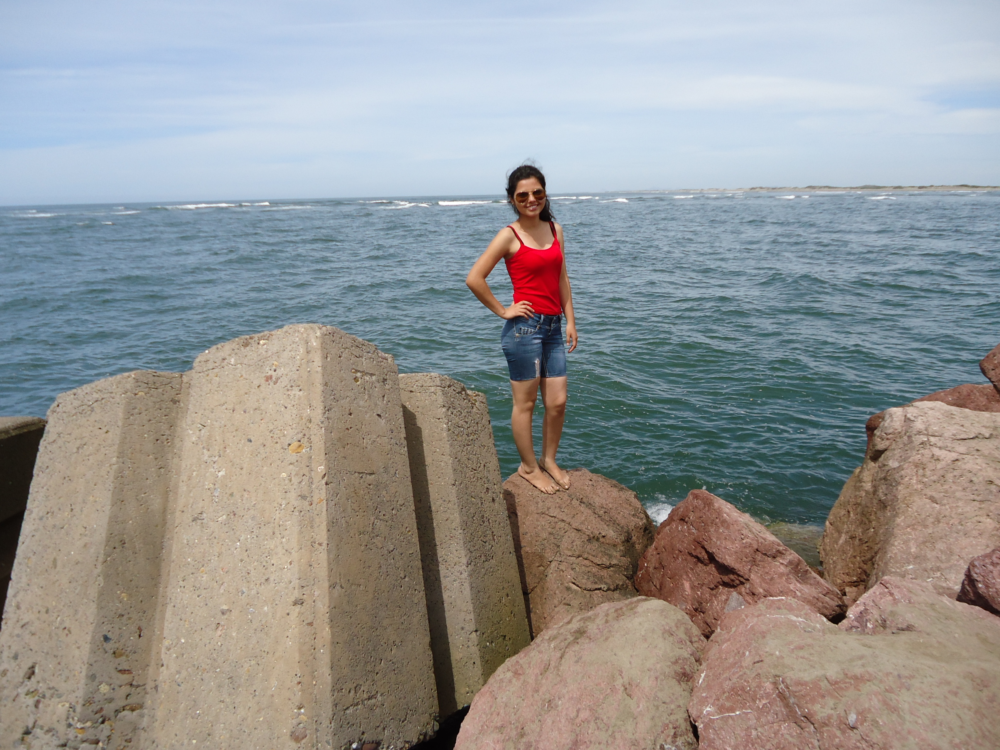
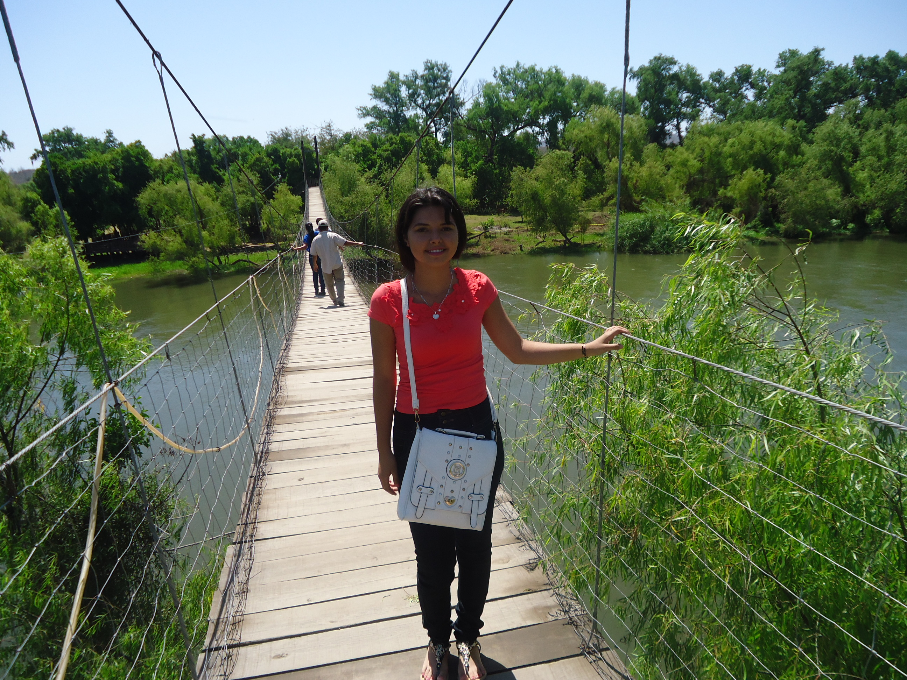
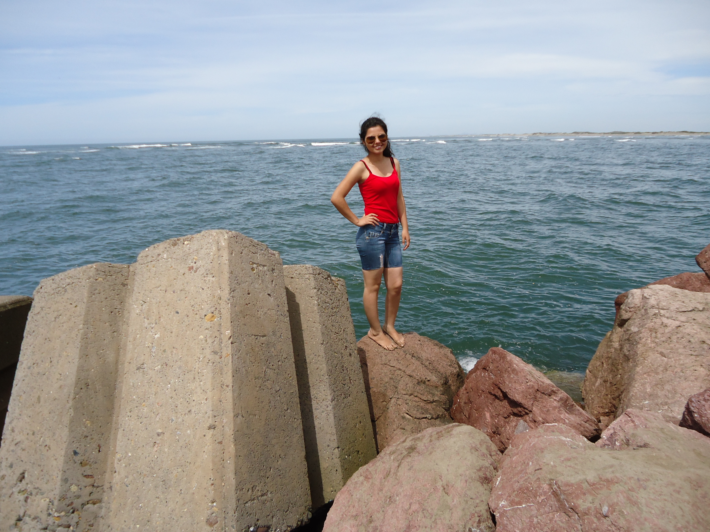
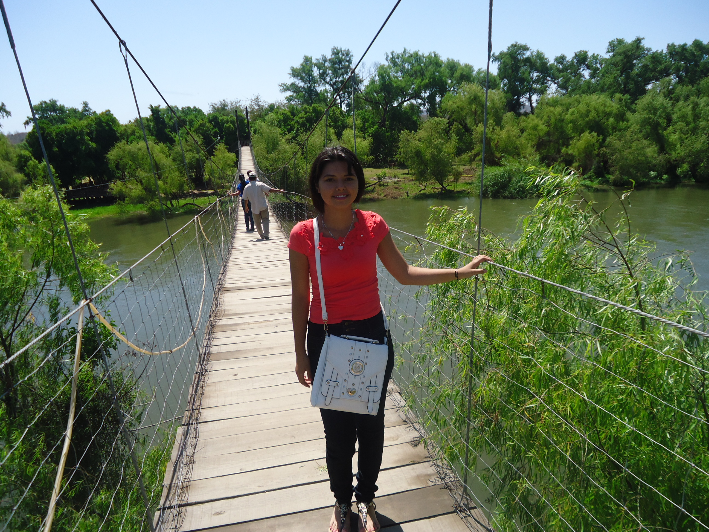
Actualmente me encuentro en una relación con una antigüedad de dos años dos meses iniciando el 01 de enero de 2015, mi novio se llama
Jose Manuel Arroyo Jacquez, nuestra historia es muy curiosa ya que él y yo nos conocemos desde primer año de primaria y nunca nos habíamos hablado mucho,
hasta la preparatoria que volvimos a quedar juntos en el mismo salón y empezamos hablar cada día mas y más hasta que un día hablamos y
nos dijimos lo que sentíamos el uno por el otro y decidimos ver si funcionaria una relación entre nosotros y aquí estamos aún juntos.


Hoy en día tengo 20 años de edad, curso una licenciatura y espero Dios me lo permita ir por más.

Inicio |
Familia |
Infancia |
Niñez
Metas y Filosofía de vida |
Estudios |
Gustos
© SRG Productions ™